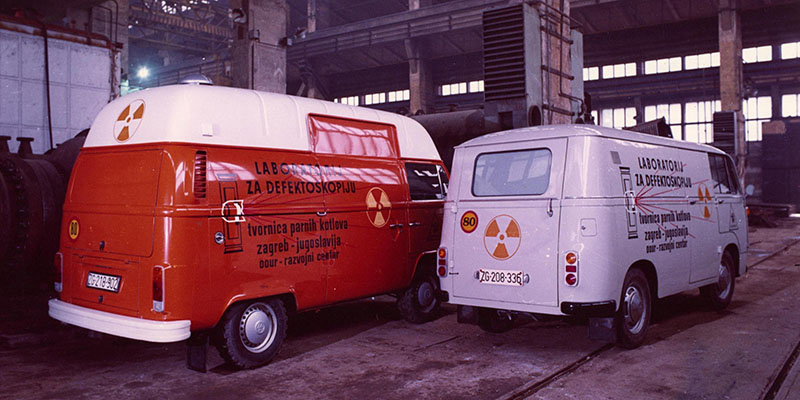
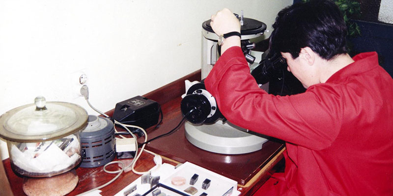
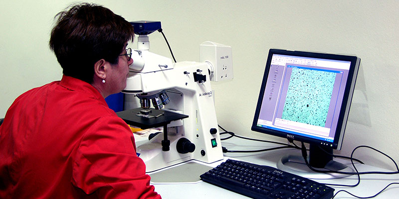
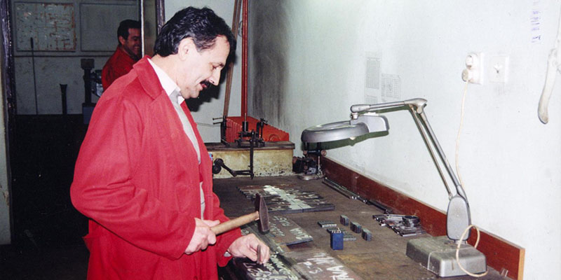
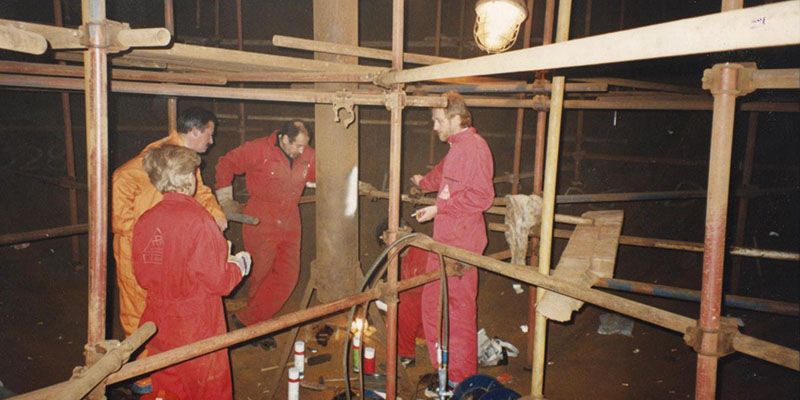
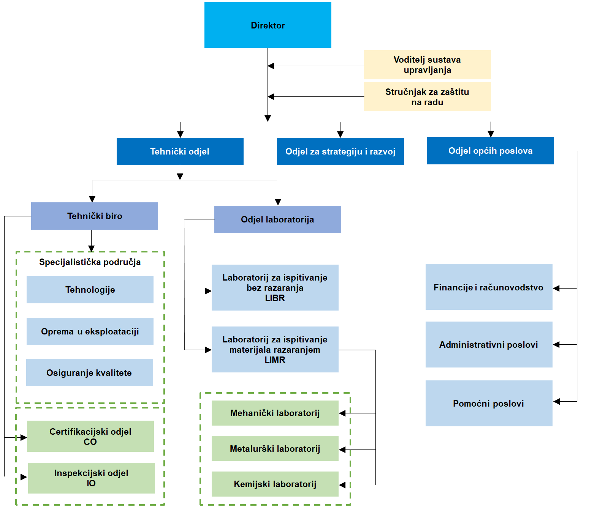

From R&D department
to independent instituteOd Odjela za razvoj
do samostalnog zavoda
Sixty years ago, TPK started as the development department inside a steam boiler factory. Today it's an independent institute that designs, builds, assembles, inspects and certifies energy and process equipment across Croatia and the region.Prije šezdeset godina TPK je počeo kao odjel za razvoj unutar tvornice parnih kotlova. Danas je to samostalan zavod koji projektira, izrađuje, montira, pregledava i certificira energetsku i procesnu opremu diljem Hrvatske i regije.
R&D departmentOdjel za razvoj
Founded as the “Development Department” inside “TPK” — Tvornica Parnih Kotlova, the steam boiler factory — to develop and qualify the equipment the plant produced.Osnovan kao „Odjel za razvoj“ unutar „TPK“ — Tvornice parnih kotlova — radi razvoja i provjere opreme koju je tvornica proizvodila.
Independent instituteSamostalan zavod
Registered in Zagreb as its own legal and business entity on 29 December 1989 — free to work with any manufacturer, operator or plant in the sector, not only its parent factory.Registriran u Zagrebu kao samostalan pravni i poslovni subjekt 29. prosinca 1989. — slobodan surađivati s bilo kojim proizvođačem, operaterom ili postrojenjem u struci, ne samo s matičnom tvornicom.
Full-cycle partnerPartner za cijeli životni ciklus
Today: a team of engineers and operational staff, laboratory and mobile equipment, covering design, manufacture, assembly and exploitation of energy and process equipment under one roof.Danas: tim inženjera i operativnog osoblja, laboratorijska i pokretna oprema, koji pokrivaju projektiranje, izradu, montažu i eksploataciju energetske i procesne opreme pod istim krovom.
For 60 years of its existence, TPK — Zavod d.o.o. has followed a development path from the “Development Department” founded within “TPK” (the Steam Boiler Factory) to today's independent legal and business entity, which — through its human and physical resources — represents a development institution in machine building.Za svog 60-godišnjeg postojanja, TPK – Zavod d.o.o. je prešao razvojni put od „Odjela za razvoj“ osnovanog u sklopu „TPK“ (Tvornice parnih kotlova) do današnjeg samostalnog pravnog i poslovnog subjekta koji svojim kadrovskim i fizičkim resursima predstavlja razvojnu instituciju u strojogradnji.
Today we have a team of experts, operational staff, and laboratory and mobile equipment, in a quality and scope that allows us to provide a range of services in the design, manufacture (production), assembly (construction) and exploitation of energy and process equipment.Danas raspolažemo sa timom stručnjaka, operativnim kadrom, laboratorijskom i pokretnom opremom, u kvaliteti i obimu koji nam omogućuju pružanje niza usluga u području projektiranja, izrade (proizvodnje), montaže (izgradnje) i eksploatacije energetske i procesne opreme.
Across our entire activity — and especially in the areas of Q.A. (Quality Assurance) and Q.C. (Quality Control) in the production and assembly of welded structures — we have built long-standing and successful cooperation with inspection bodies and classification societies (IPT RH; CRS; TÜV; LR; DNV; BV....).U cjelokupnoj djelatnosti, a naročito u području Q.A. (Osiguranje kvalitete) i Q.C. (Kontrola kvalitete) pri proizvodnji i montaži zavarenih konstrukcija, ostvarili smo dugogodišnju i uspješnu suradnju sa inspekcijskim ustanovama i klasifikacijskim društvima (IPT RH; CRS; TÜV; LR; DNV; BV....).





OrganizationOrganizacija
How the institute is structured, department by department.Kako je zavod ustrojen, po odjelima.

Our peopleLjudski resursi
TPK — Zavod d.o.o. and its 45 permanent employees aim to provide a quality service that satisfies our customers, while promoting the professional dignity of the technical profession.TPK Zavod d.o.o. sa svojih 45 stalno zaposlenih djelatnika ima za cilj pružiti kvalitetnu uslugu radi postizanja zadovoljstva kupca uz promicanje profesionalnog digniteta tehničke struke.
Given how specialized our work is, beyond hands-on expertise our staff also hold formal qualifications and certifications, including:S obzirom na specifičnost djelatnosti, osim specijalističkih znanja i iskustva na poslovima koje obavljaju, naši djelatnici raspolažu i formalnim dokazima o stručnosti i osposobljenosti kao:
- Licensed mechanical engineersOvlašteni inženjeri strojarstva
- European / international welding engineers (EWE/IWE)Europski / međunarodni inženjeri zavarivanja (EWE/IWE)
- International welding inspectors (IWIP-C)Međunarodni inspektori zavarivanja (IWIP-C)
- Non-destructive testing (NDT) specialists certified to HRN EN ISO 9712, per EN, ISO, ASME, ANSI, API and DIN standardsSpecijalisti za ispitivanje metodama bez razaranja (NDT) prema HRN EN ISO 9712 u skladu s EN, ISO, ASME, ANSI, API i DIN normama
- Destructive testing (DT) specialists, per EN, ISO, ASTM standards and in-house methodsSpecijalisti za ispitivanje razornim metodama (DT) u skladu s EN, ISO, ASTM normama i vlastitim metodama
- Anti-corrosion protection (AKZ) testing specialists, per EN, ISO, ASTM standardsSpecijalisti za ispitivanje antikorozivne zaštite (AKZ) u skladu s EN, ISO, ASTM normama
Certifications & accreditationsCertifikati i akreditacije
Recognition from classification societies and certification bodies, then and now.Priznanja klasifikacijskih društava i certifikacijskih tijela, nekađ i danas.


What we stand forZa što se zalažemo
Our mission, in three commitments.Naša misija u tri obveze.
Provide services in line with our customers' needs and to their satisfaction, while promoting knowledge and defending the dignity of the technical profession.Pružati usluge u skladu sa željama i na zadovoljstvo naših kupaca, uz promicanje znanja i obranu digniteta tehničke struke.
Develop and retain competent people, valuing their enthusiasm and technical judgement.Razvijati i zadržati kompetentne ljude, cijeneći njihov entuzijazam i stručnu prosudbu.
Continuously improve the company's business results, without compromising on the quality of a single report or certificate.Kontinuirano poboljšavati poslovne rezultate poduzeća, bez ustupaka u kvaliteti ijednog izvještaja ili certifikata.
See what we actually doPogledajte što zapravo radimo
Design, manufacturing, assembly and exploitation support — the four stages we cover end to end.Projektiranje, izrada, montaža i podrška u eksploataciji — četiri faze koje pokrivamo od početka do kraja.